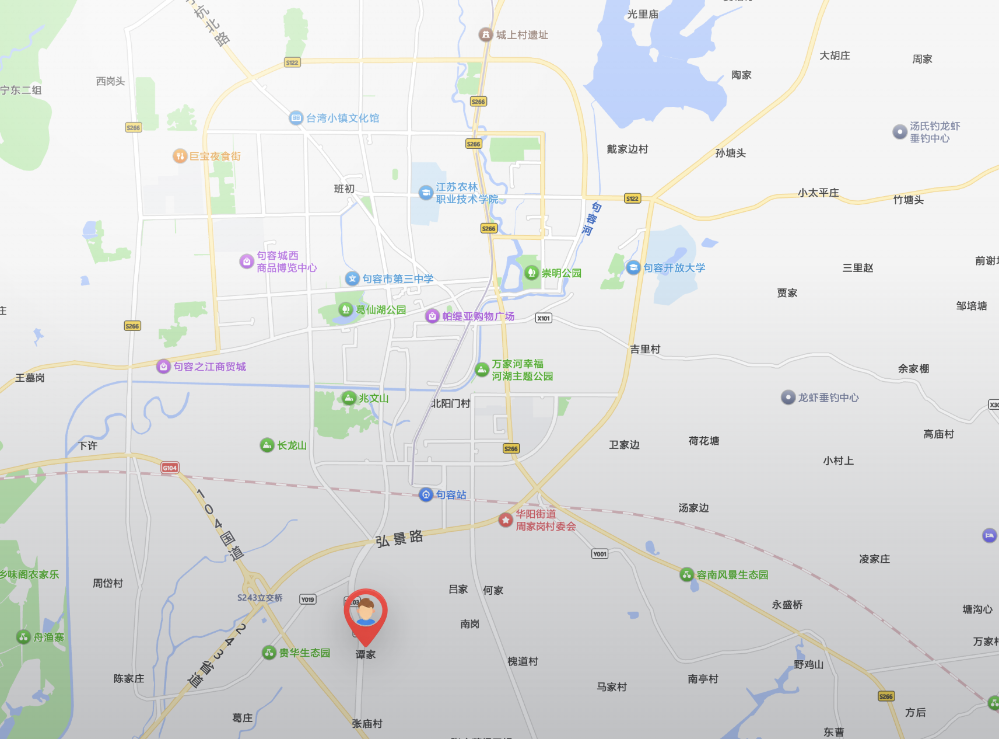

报废机动车回收
小型车、货车、客车、单位车辆、老旧车及事故车回收。
华宝再生资源有限公司围绕报废机动车回收拆解场景，建立从车辆咨询、信息核验、入场接收、拆解分拣到资源化处理的服务流程，帮助客户更省心地完成车辆报废相关事项。
公司坚持规范、安全、环保的经营理念，对废钢、有色金属、塑料、橡胶、玻璃、废油液、电瓶等进行分类管理，推动报废车辆有序退出与资源循环利用。
小型车、货车、客车、单位车辆、老旧车及事故车回收。
车辆核验、预处理、拆解、分类存放与资源化处理。
根据车辆状态协助安排拖运或送车入场。
镇江范围内官方认定农机报废定点企业。
江苏省内首批获得报废资质的企业。
扎根句容，毗邻高速路口与通行主干道，半小时通勤辐射周边城市。
镇江范围内官方认定的农机报废定点企业。
报废车辆入场、核验、拆解、分类处理流程清楚。
具备车辆接收、拆解分拣、资源化处理与资料指引能力。
具体资料与办理要求以当地主管部门及实际车辆情况为准。
建议先电话咨询后再准备材料，减少往返沟通。

报废汽车回收拆解、农机报废定点服务，欢迎电话咨询。